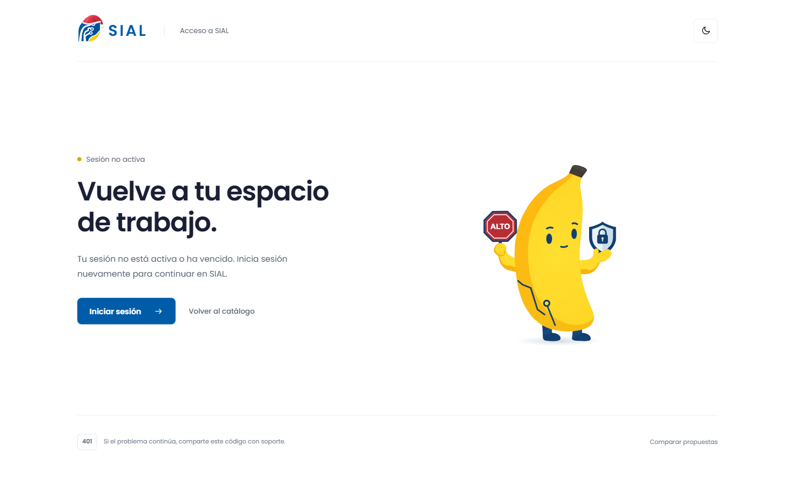
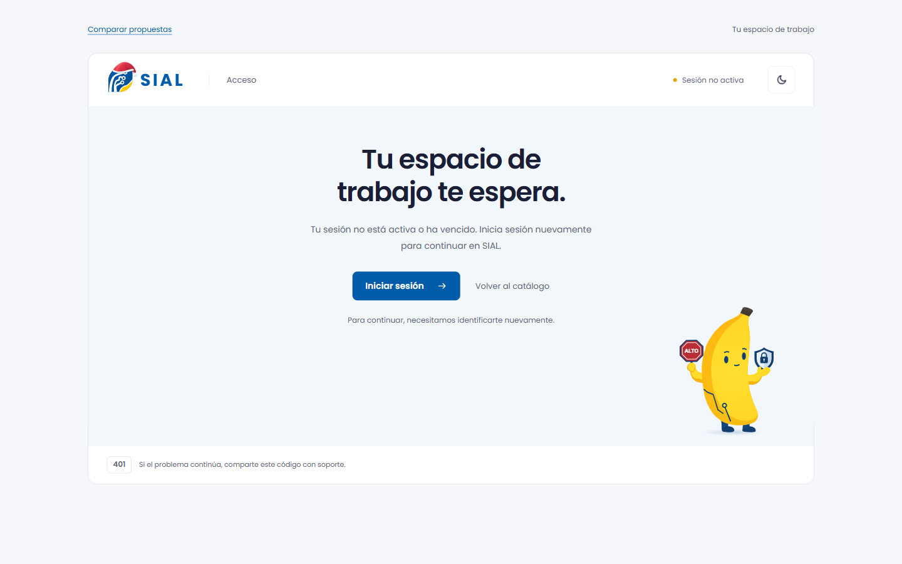
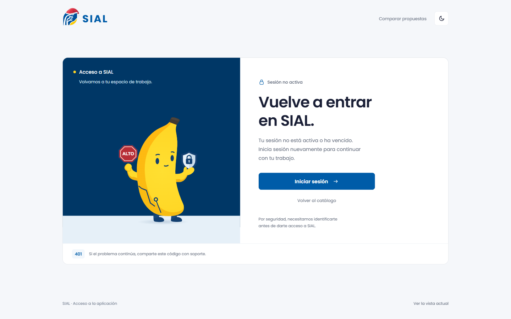

Sesión en pausa · Elegida
Estructura seleccionada para continuar: acceso abierto y despejado, con Bananito acompañando la recuperación.
Ver opción elegidaUn contexto de aplicación para Bananito. Compara la composición y abre cada propuesta para ver la entrada y el gesto en movimiento.

Estructura seleccionada para continuar: acceso abierto y despejado, con Bananito acompañando la recuperación.
Ver opción elegida
Alternativa explorada: una ventana de SIAL en pausa sitúa al personaje dentro del sistema.
Abrir propuesta
La recuperación y el personaje comparten una superficie focalizada, con mayor presencia del azul institucional.
Abrir propuesta